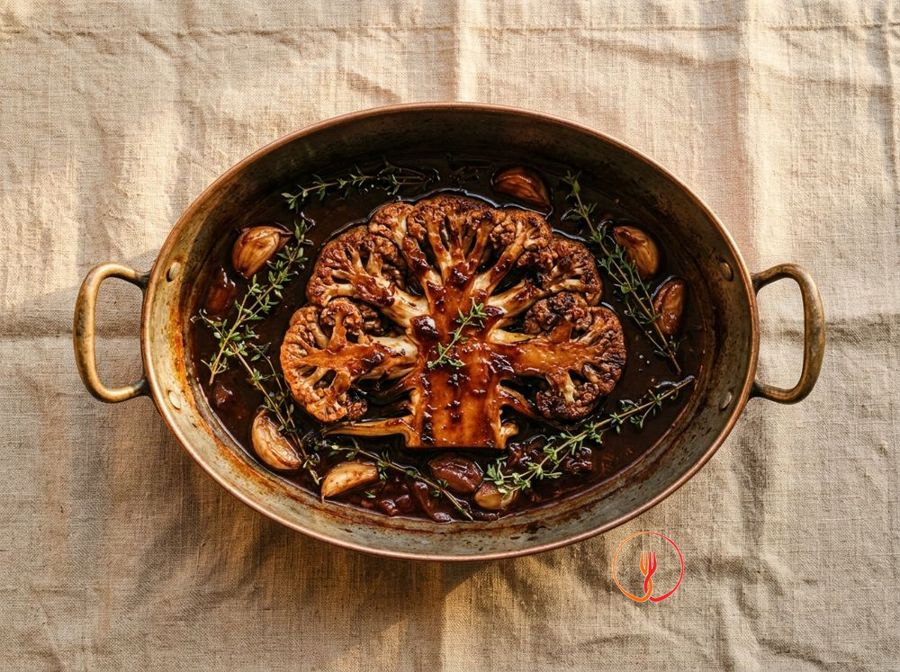

Steak di cavolfiore brasato al vino rosso e timo
Una 'bistecca' vegetale spessa e saporita, brasata lentamente in un fondo di vino rosso che le conferisce un colore intenso e un gusto deciso.
Ingredienti
- Cavolfiore grande e compatto1 pezzo
- Vino rosso fermo (tipo Merlot o Sangiovese)300ml
- Brodo vegetale
Fallo in casa: Brodo vegetale ›200ml - Concentrato di pomodoro1 cucchiaio
- Aglio2 spicchi
- Timo fresco4 rametti
- Farina di riso2 cucchiai
- Olio extravergine d'oliva4 cucchiai
- Sale e pepe neroq.b.
Allergeni
Sedano, Solfiti
Procedimento
- Rimuovete le foglie esterne dal cavolfiore ma lasciate intatto il torsolo centrale.
- Tagliate il cavolfiore verticalmente in 4 fette spesse circa 2,5 - 3 cm, mantenendo il torsolo che terrà unite le cimette.
- Infarinate leggermente le 'steak' ottenute con la farina di riso, scuotendo l'eccesso.
- In un'ampia padella antiaderente, scaldate l'olio con gli spicchi d'aglio schiacciati e il timo.
- Adagiate le fette di cavolfiore e rosolatele 4 minuti per lato a fuoco medio-alto finché non saranno ben dorate.
- Sfumate con il vino rosso e lasciate evaporare l'alcol per un paio di minuti.
- Aggiungete il brodo vegetale in cui avrete sciolto il concentrato di pomodoro.
- Coprite con un coperchio e lasciate brasare a fuoco dolce per circa 20 minuti, girando le fette a metà cottura con estrema delicatezza.
- Una volta che il cavolfiore è tenero, togliete il coperchio e fate restringere il fondo di cottura finché non diventerà una salsa lucida.
- Servite le steak calde irrorandole generosamente con la loro salsa al vino rosso.
Valori nutrizionali (stima)
| Per porzione (195 g) | Per 100 g | |
|---|---|---|
| Energia | 766 kJ / 183 kcal | 393 kJ / 94 kcal |
| Proteine | 4.3 g | 2.2 g |
| Carboidrati | 14 g | 7.1 g |
| di cui zuccheri | 5.5 g | 2.8 g |
| Grassi | 10 g | 5.3 g |
| di cui saturi | 1.4 g | 0.7 g |
| Fibre | 4.0 g | 2.1 g |
| Sale | 1.5 g | 0.8 g |
Valori stimati con l'AI su dati medi CREA / USDA: sono indicativi e non sostituiscono il parere di un medico o di un nutrizionista.
Apri la ricetta nell'app per la lista della spesa, le schede ingredienti e i negozi vicini.